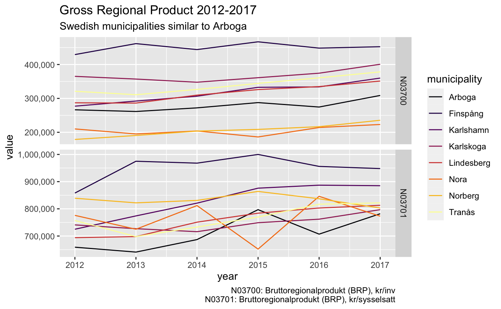

introduction-to-rkolada.RmdThe Swedish Municipalities and Regions Database (Kolada) is a openly accessible database containing over 4,000 Key Performance Indicators for a vast number of aspects of municipal and regional organisations, politics and economic life. The rKolada R package provides an interface to R users to directly download, explore, and simplify metadata and data from Kolada. The package draws heavily on functionality provided by several packages in the tidyverse family and it is thus recommended that you install the tidyverse package before installing rKolada:
install.packages("tidyverse")
This vignette provides a quick-start introduction to the core functionality of the package. To learn more about the specifics of functions and to see a full list of the functions included, please see ??rKolada.
library("rKolada")
Kolada contains five different types of metadata entities: 1. kpi: Key Performance Indicators 2. municipality: Municipalities 3. ou: Operating Unit, a subunit of municipalities 4. kpi_groups: Thematic groupings of KPIs 5. municipality_groups: Thematic groupings of municipalities
To obtain data using rKolada it is usually a good idea to start by exploring metadata. rKolada comes with convenience functions for each of the five above mentioned entities. These functions are all names [entity]_get() and can be called as follows. The cache parameter allows you to temporarily store results on disk to avoid repeated calls to the API in case you need to re-run your code:
kpis <- get_kpi() munic <- get_municipality()
If you have already familiarised yourself with the Kolada API (e.g. by reading the official docs on GitHub) you can access the full metadata API using get_metadata().
Metadata tables are stored as regular tibbles so you can start inspecting them by simply viewing them in RStudio. For example, the KPI metadata we downloaded looks like this:
dplyr::glimpse(kpis) #> Rows: 4,636 #> Columns: 13 #> $ auspices <chr> "E", "E", "X", NA, NA, NA, "X", NA, "X", "X", N… #> $ description <chr> "Personalkostnader kommunen totalt, dividerat m… #> $ has_ou_data <lgl> FALSE, FALSE, FALSE, FALSE, FALSE, FALSE, FALSE… #> $ id <chr> "N00002", "N00003", "N00005", "N00009", "N00011… #> $ is_divided_by_gender <int> 0, 0, 0, 0, 0, 0, 0, 0, 0, 0, 0, 0, 0, 0, 0, 0,… #> $ municipality_type <chr> "K", "K", "K", "K", "K", "K", "K", "K", "K", "K… #> $ operating_area <chr> "Kommunen, övergripande", "Kommunen, övergripan… #> $ ou_publication_date <chr> NA, NA, NA, NA, NA, NA, NA, NA, NA, NA, NA, NA,… #> $ perspective <chr> "Resurser", "Resurser", "Resurser", "Resurser",… #> $ prel_publication_date <chr> "2020-04-08", "2020-04-08", "2020-04-08", NA, N… #> $ publ_period <chr> "2019", "2019", "2019", "2019", NA, NA, NA, NA,… #> $ publication_date <chr> "2020-08-31", "2020-08-31", "2020-08-31", "2020… #> $ title <chr> "Personalkostnader som andel av verksamhetens k…
But rKolada also comes with a set of convenience functions to simplify the task of exploring KPI metadata. kpi_search() filters down a list of KPIs using a search term, and kpi_minimize() can be used to clean the KPI metadata table from columns that don’t contain any information that distinguish KPIs from each other:
kpi_res <- kpis %>% kpi_search("BRP") %>% kpi_minimize(remove_undocumented_columns = TRUE, remove_monotonous_data = TRUE) dplyr::glimpse(kpi_res) #> Rows: 2 #> Columns: 5 #> $ id <chr> "N03700", "N03701" #> $ title <chr> "Bruttoregionalprodukt (BRP), kr/inv", "Bruttoregion… #> $ description <chr> "BRP dividerat med antal invånare i det geografiska … #> $ publ_period <chr> "2019", "2018" #> $ publication_date <chr> "2020-02-25", "2019-12-13"
Let’s say we are interested in retrieving data for four Swedish municipalities. We thus want to create a table containing metadata about these four municipalities:
munic_res <- munic %>% municipality_search(c("Stockholm", "Göteborg", "Malmö")) %>% municipality_search("K", column = "type") dplyr::glimpse(munic_res) #> Rows: 3 #> Columns: 3 #> $ id <chr> "1480", "1280", "0180" #> $ title <chr> "Göteborg", "Malmö", "Stockholm" #> $ type <chr> "K", "K", "K"
In addition to the information provided about every KPI in the title and description columns of a KPI table, kpi_add_keywords() can be used to create a rough summary of every KPI creating a number of keyword columns. The function kpi_describe() can be used to print a huamn readable table containing a summary of a table of KPIs. For instance, by setting the knitr chunk option results='asis', the following code renders a markdown section that can be directly integrated into a Markdown report:
kpi_res %>% kpi_bind_keywords(n = 4) %>% kpi_describe(max_n = 1, format = "md", heading_level = 4, sub_heading_level = 5)
BRP dividerat med antal invånare i det geografiska området. Bruttoregionprodukt (BRP) är den regionala motsvarigheten till bruttonationalprodukt (BNP) mätt från produktsidan: värden av all produktion av varor och tjänster i en region. Nyckeltalet visar den ekonomiska utvecklingen inom det geografiska området. Källa: SCB
Once we have settled on what KPIs we are interested in the next step is to download actual data from Kolada. Use get_values() to do this. To download data from the Kolada API you need to provide at least two of the following parameters:
kpi: One or a vector of several KPI IDsmunicipality: One or a vector of several municipality IDsperiod: The years for which data should be downloaded.The ID tags for KPIs and municipalities can be extracted using the convenience functions kpi_query_filter() and municipality_name_to_filter():
kld_data <- get_values( kpi = kpi_extract_ids(kpi_res), municipality = municipality_extract_ids(munic_res), period = 1990:2019, simplify = TRUE )
Setting the simplify parameter to TRUE, again, makes results more human readable, by removing undocumented columns and relabeling data with human-friendly labels.
Finally, time to inspect our data:
# Visualise results library("ggplot2") ggplot(kld_data, aes(x = year, y = value)) + geom_line(aes(color = municipality)) + facet_grid(kpi ~ .) + scale_y_continuous(labels = scales::comma) + labs( title = "Gross Regional Product", subtitle = "Yearly development in Sweden's three\nmost populous municipalities", x = "Year", y = "", caption = values_legend(kld_data, kpis) )
